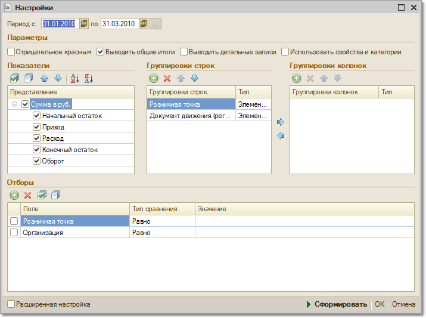

Данный отчет предназначен для оценки оборотов по денежным средствам в розничных точках. Под термином «розничные точки» в данном случае подразумеваются неавтоматизированные торговые точки (НТТ) и автоматизированные розничные точки (розничные склады- АТТ).

С помощью этого отчета можно проконтролировать правильность поступления розничной выручки при работе с НТТ и АТТ.
Ведомость по денежным средствам в розничных точках группируется по розничным точкам (местам хранения розничной выручки).
Если необходимо контролировать данные по конкретным АТТ (собственным магазинам, торговым залам), то в качестве вида розничной точки при отборе выбирается "Касса ККМ", а затем из справочника выбираются те кассы ККМ, в которых фиксируется прием розничной выручки для конкретных АТТ.
Если необходимо контролировать данные по НТТ (удаленные торговые точки, ларьки), то в качестве вида розничной точки при отборе выбирается "Склады (места хранения)", а потом из списка выбираются те НТТ (склады), по которым необходимо установить отбор.
Отчет можно детализировать по документам движения: Приходный кассовый ордер с установленным видом операции "Прием розничной выручки" и Отчет о розничных продажах.